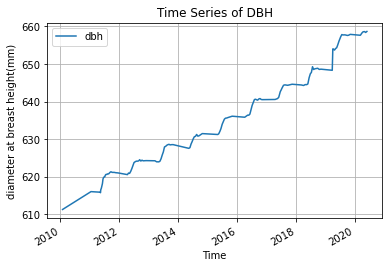
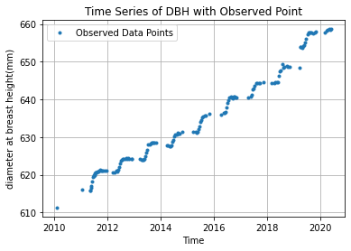
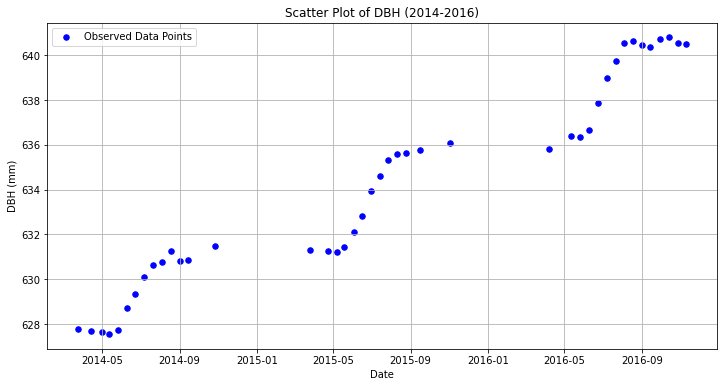
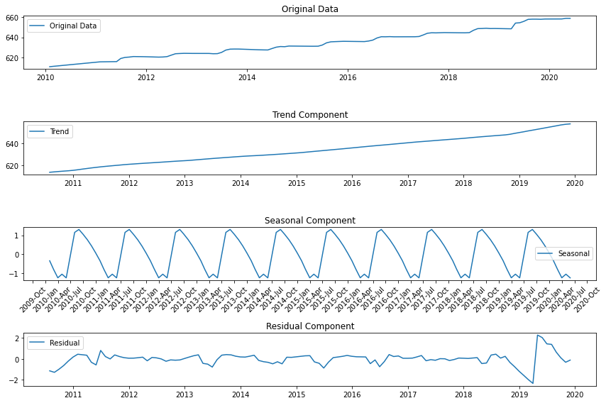
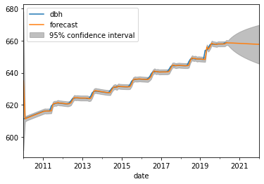
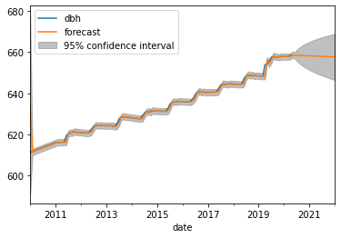

import pandas as pd
import matplotlib.pyplot as pltProblem Set 02

Instructions: 1. Name: Christy Yang 1. Create a new ChatGPT chat called “SDS390 PS02” that contains all the prompts you used for this problem set, click the share button, and paste the URL in Markdown format here
1. Load and explore data
- Load the CSV data of biweekly dendroband measures for tree with tag 82203
- Look at the raw data (rows and variables) and meta-data as Amir always told me to do
- Note that DBH is the only non-index variable we will work with, thus simplify the data frame to only have this variable
- Plot the time series of DBH (diameter at breast height, in mm) as we’ve done numerous times in DataCamp: just using
.plot()with no arguments - Now plot the time series where each of the 147 observed data point is marked with a dot. In other words, your plot should at the very least have these points.
- What is the difference in information presented between the two plots?
- Describe any patterns you observe in the time series where each observed data point is marked with a dot
6.The ‘Time Series of DBH with Observed Points’ is a scatter plot that displays the actual data points of the DBH measurements. Each individual data point corresponds directly to an exact value recorded in the data table. This plot provides the precise discrete observations.
In contrast, the ‘Time Series of DBH’ connects these data points with a continuous line, creating a line graph that illustrates the trends and variations in DBH over time. This line line graph offers a smoother and continuous view of how DBH values, better for the observation of trends and patterns in the data.
7.The plot as a whole reveals a consistent and upward trend in DBH (Diameter at Breast Height) from 2010 to 2020, which aligns with the natural growth pattern of trees. Additionally, the plot illustrates the influence of seasonal variation on DBH. DBH experiences a rapid increase during the second and third quarters of each year. However, it is important to note that there are data gaps in the first and fourth quarters of each year, resulting in blank areas on the plot during those periods. These gaps may be due to lack of measurement practices.
data = pd.read_csv("tag_82203.csv")
print(data.index)
# Inspect the data
print("Raw data:")
print(data.head())
print("Data info:")
print(data.info())
# Get metadata
metadata = data.describe()
print("Metadata data:")
print(metadata)
#Set date column as index
data['date'] = pd.to_datetime(data['date'])
data.set_index('date', inplace=True)
dbh = data['dbh']
print("dbh index")
print(dbh.index)
#Haven't explicitly set an index for the original DataFrame data, the index is a default integer-based index starting from 0 and incrementing by 1 for each row.
dbh.plot()
plt.xlabel('Time')
plt.ylabel('diameter at breast height(mm)')
plt.title('Time Series of DBH')
plt.grid(True)
plt.legend()
plt.show()
plt.plot(dbh, 'o', markersize=3,label='Observed Data Points')
plt.title("Time Series of DBH with Observed Point")
plt.xlabel("Time")
plt.ylabel("diameter at breast height(mm)")
plt.grid(True)
plt.legend()
plt.show()RangeIndex(start=0, stop=147, step=1)
Raw data:
tag stemtag survey.ID year month day intraannual sp measure \
0 82203 1 2010.01 2010 1 27 1 litu 26.20
1 82203 1 2011.01 2011 1 15 1 litu 41.10
2 82203 1 2011.02 2011 5 9 1 litu 40.62
3 82203 1 2011.03 2011 5 13 1 litu 40.21
4 82203 1 2011.04 2011 5 16 1 litu 42.55
codes ... status stemID dendDiam dbh_orig new.band dendroID \
0 NaN ... alive 10045 610.0 611.3 1 106
1 NaN ... alive 10045 NaN 611.3 0 106
2 NaN ... alive 10045 NaN 611.3 0 106
3 NaN ... alive 10045 NaN 611.3 0 106
4 NaN ... alive 10045 NaN 611.3 0 106
date dbh scenario data_source
0 2010-01-27 611.300000 0 biweekly_dbh
1 2011-01-15 616.049980 1 biweekly_dbh
2 2011-05-09 615.896874 1 biweekly_dbh
3 2011-05-13 615.766085 1 biweekly_dbh
4 2011-05-16 616.512610 1 biweekly_dbh
[5 rows x 21 columns]
Data info:
<class 'pandas.core.frame.DataFrame'>
RangeIndex: 147 entries, 0 to 146
Data columns (total 21 columns):
# Column Non-Null Count Dtype
--- ------ -------------- -----
0 tag 147 non-null int64
1 stemtag 147 non-null int64
2 survey.ID 147 non-null float64
3 year 147 non-null int64
4 month 147 non-null int64
5 day 147 non-null int64
6 intraannual 147 non-null int64
7 sp 147 non-null object
8 measure 147 non-null float64
9 codes 1 non-null object
10 notes 4 non-null object
11 status 147 non-null object
12 stemID 147 non-null int64
13 dendDiam 6 non-null float64
14 dbh_orig 147 non-null float64
15 new.band 147 non-null int64
16 dendroID 147 non-null int64
17 date 147 non-null object
18 dbh 147 non-null float64
19 scenario 147 non-null int64
20 data_source 147 non-null object
dtypes: float64(5), int64(10), object(6)
memory usage: 24.2+ KB
None
Metadata data:
tag stemtag survey.ID year month day \
count 147.0 147.0 147.000000 147.000000 147.000000 147.000000
mean 82203.0 1.0 2014.919531 2014.836735 6.823129 15.598639
std 0.0 0.0 2.876154 2.890800 2.331149 8.695503
min 82203.0 1.0 2010.010000 2010.000000 1.000000 1.000000
25% 82203.0 1.0 2012.135000 2012.000000 5.000000 9.000000
50% 82203.0 1.0 2015.020000 2015.000000 7.000000 15.000000
75% 82203.0 1.0 2017.115000 2017.000000 9.000000 23.000000
max 82203.0 1.0 2020.060000 2020.000000 12.000000 31.000000
intraannual measure stemID dendDiam dbh_orig new.band \
count 147.0 147.000000 147.0 6.000000 147.000000 147.000000
mean 1.0 80.126599 10045.0 629.500000 625.032650 0.013605
std 0.0 37.011726 0.0 15.565989 14.113042 0.116242
min 1.0 14.330000 10045.0 610.000000 611.300000 0.000000
25% 1.0 55.510000 10045.0 616.750000 611.300000 0.000000
50% 1.0 79.610000 10045.0 631.500000 627.799988 0.000000
75% 1.0 110.085000 10045.0 641.000000 627.800000 0.000000
max 1.0 147.000000 10045.0 648.000000 654.000000 1.000000
dendroID dbh scenario
count 147.000000 147.000000 147.000000
mean 224.285714 634.753251 14.707483
std 290.730210 12.742316 166.028518
min 106.000000 611.300000 0.000000
25% 106.000000 624.144951 1.000000
50% 106.000000 631.291928 1.000000
75% 106.000000 644.381672 1.000000
max 934.000000 658.634184 2014.000000
dbh index
DatetimeIndex(['2010-01-27', '2011-01-15', '2011-05-09', '2011-05-13',
'2011-05-16', '2011-05-24', '2011-06-06', '2011-06-13',
'2011-06-20', '2011-06-27',
...
'2019-09-05', '2019-10-02', '2019-10-17', '2019-11-06',
'2020-03-11', '2020-03-30', '2020-04-14', '2020-05-02',
'2020-05-15', '2020-05-31'],
dtype='datetime64[ns]', name='date', length=147, freq=None)

# Select data from the year range 2014-2016
data_2014_2016 = data['2014-01-01':'2016-12-31']
# Create a scatter plot for the 'dbh' column within the selected date range
plt.figure(figsize=(12, 6))
plt.scatter(data_2014_2016.index, data_2014_2016['dbh'], marker='o', s=30, label='Observed Data Points', color='b')
plt.title("Scatter Plot of DBH (2014-2016)")
plt.xlabel("Date")
plt.ylabel("DBH (mm)")
plt.grid(True)
plt.legend()
plt.show()
2. Decomposition Plots
Create a seasonal decomposition plot of this data to answer the following questions: 1. What is the approximate growth (in mm) per year trend for this tree 1. What is the approximate range in seasonal variation in growth around this trend? 1. When are the peaks and when are the valleys in this seasonal variation? 1. Are there periods of time where we might be skeptical of the above trend and seasonality?
Note: You may need to do some data transformation as seen in the first DataCamp course to get a valid plot
Approximate Growth (in mm) per Year Trend:4.7 The approximate annual growth trend can be estimated by examining the ‘Trend Component’ plot.
Approximate Range in Seasonal Variation in Growth:[-1,1] The seasonal component represents the periodic fluctuations in growth. Values near 1 indicate the peak of the seasonal pattern, representing periods with higher-than-average values. Values near -1 indicate the trough of the seasonal pattern, representing periods with lower-than-average values. Values near 0 indicate average value.
Peaks:The third quarter of each year Valleys:The second quarter of each year
Periods of skeption may be related to irregularities in the data. The residual component represents the unexplained variations in the data after accounting for the trend and seasonality. The residual plot shows some remaining seasonality patterns, also called autocorrelation, it can be an indication of seasonality that hasn’t been completely removed by the decomposition process. This suggests that there may be external factors or seasonal patterns that are not completely captured by the seasonal decomposition. It seems that the two abnormal increases in early 2011 and the first half of 2019 in the residual plot correspond to the lack of measurement at that time.
import pandas as pd
import matplotlib.pyplot as plt
from statsmodels.tsa.seasonal import seasonal_decompose
# The seasonal_decompose does not handle missing values in the input time series data.
# Resample the data to fill in missing monthes using forward fill to ensure having data for each month, allowing to better analyze these patterns.
data_resampled = data['dbh'].resample('M').mean().interpolate()
print("Resample data:")
print(data_resampled)
result = seasonal_decompose(data_resampled, model='additive')
trend = result.trend
seasonal = result.seasonal
residual = result.resid
print(trend.describe())
# Plot the components
plt.figure(figsize=(12, 8))
plt.subplot(411)
plt.plot(data_resampled, label='Original Data')
plt.legend()
plt.title('Original Data')
plt.subplot(412)
plt.plot(trend, label='Trend')
plt.legend()
plt.title('Trend Component')
plt.subplot(413)
plt.plot(seasonal, label='Seasonal')
plt.legend()
plt.title('Seasonal Component')
# Format x-axis to show year and selected months (Jan, Apr, Jul, Oct)
months_to_show = [1, 4, 7, 10] # Months to display
plt.gca().xaxis.set_major_locator(MonthLocator(bymonth=months_to_show, bymonthday=1))
plt.gca().xaxis.set_major_formatter(DateFormatter("%Y-%b"))
plt.xticks(rotation=45)
plt.subplot(414)
plt.plot(residual, label='Residual')
plt.legend()
plt.title('Residual Component')
plt.tight_layout()
plt.show()Resample data:
date
2010-01-31 611.300000
2010-02-28 611.695832
2010-03-31 612.091663
2010-04-30 612.487495
2010-05-31 612.883327
...
2020-01-31 657.888662
2020-02-29 657.904592
2020-03-31 657.920522
2020-04-30 658.548156
2020-05-31 658.533295
Freq: M, Name: dbh, Length: 125, dtype: float64
count 113.000000
mean 633.512231
std 11.701697
min 613.674990
25% 623.943440
50% 632.240265
75% 642.794528
max 657.540481
Name: trend, dtype: float64
approximate_annual_growth = (data_resampled.iloc[-1] - data_resampled.iloc[0]) /(data_resampled.index.year[-1]-data_resampled.index.year[0])
print(approximate_annual_growth)4.7233294670626723. Forecasting using an AR(2) model
In this exercise you will use an AR(2) model as seen in the second datacamp course “Time Series Analysis in Python” to forecast this tree’s size exactly two years into the future. Unfortunately since we aren’t covering ARIMA models until later in the course, we won’t be able to:
- Ascertain the appropriateness of using an AR(2) model. Ex: are all assumptions met?
- Fully interpret the model output’s meaning
- Diagnose any issues.
However, we will simply view this code as a minimally viable product that we will improve on later. Instructions: 1. Fit an appropriate AR(2) model 1. Print the summary of the result 1. Plot the TS data along with both in-sample fitted forecasts AND out-of-sample forecasts exactly two years into the future 1. Comment on the quality of the out-of-sample forecast. If you have any ideas on how to improve the forecast state them, if not no problem.
AR(2,0,0) Model parameters: const 634.536762 ar.L1 1.406552 ar.L2 -0.407624 sigma2 0.629942
AR(2,0,2) Model parameters: const 634.994306 ar.L1 1.575204 ar.L2 -0.576148 ma.L1 -0.195509 ma.L2 -0.018960 sigma2 0.626859
Adjust the model to let forcast value in increasing trend: The moving average order is 2, which represents 2 lag terms of the forecast errors to include in the model. It captures past forecast errors and their influence on the current value. But the positive AIC indicated a bad fitting.(disappear after a few running…)
The out-of-sample forecast doesn’t capture seasonality because the ARIMA(2,0,2) model used in this example is a simple autoregressive model that doesn’t explicitly show model seasonality.To improve the forecast quality, we can experiment with different ARIMA orders or models specifically designed to capture seasonality.
from statsmodels.tsa.arima.model import ARIMA
from statsmodels.graphics.tsaplots import plot_predict
# Fit an AR(2) model
model = ARIMA(data_resampled, order=(2, 0, 2))
model_fitted = model.fit()
# Print the summary of the result
print(model_fitted.summary())
print(model_fitted.params)
fig, ax=plt.subplots()
data_resampled.plot(ax=ax)
plot_predict(model_fitted,start=0, end='2022',ax=ax)
plt.legend(loc='upper left')
plt.show() SARIMAX Results
==============================================================================
Dep. Variable: dbh No. Observations: 125
Model: ARIMA(2, 0, 2) Log Likelihood -151.598
Date: Tue, 24 Oct 2023 AIC 315.196
Time: 10:41:24 BIC 332.166
Sample: 01-31-2010 HQIC 322.090
- 05-31-2020
Covariance Type: opg
==============================================================================
coef std err z P>|z| [0.025 0.975]
------------------------------------------------------------------------------
const 634.9943 22.538 28.174 0.000 590.821 679.168
ar.L1 1.5752 0.397 3.967 0.000 0.797 2.353
ar.L2 -0.5761 0.398 -1.449 0.147 -1.355 0.203
ma.L1 -0.1955 0.403 -0.485 0.627 -0.985 0.594
ma.L2 -0.0190 0.174 -0.109 0.913 -0.360 0.322
sigma2 0.6269 0.030 20.869 0.000 0.568 0.686
===================================================================================
Ljung-Box (L1) (Q): 0.66 Jarque-Bera (JB): 2322.77
Prob(Q): 0.42 Prob(JB): 0.00
Heteroskedasticity (H): 3.29 Skew: 3.50
Prob(H) (two-sided): 0.00 Kurtosis: 22.92
===================================================================================
Warnings:
[1] Covariance matrix calculated using the outer product of gradients (complex-step).
const 634.994306
ar.L1 1.575204
ar.L2 -0.576148
ma.L1 -0.195509
ma.L2 -0.018960
sigma2 0.626859
dtype: float64
# Fit an AR(2) model
model2 = ARIMA(data_resampled, order=(2, 0, 0))
model2_fitted = model2.fit()
# Print the summary of the result
print(model2_fitted.summary())
print(model2_fitted.params)
fig, ax=plt.subplots()
data_resampled.plot(ax=ax)
plot_predict(model2_fitted,start=0, end='2022',ax=ax)
plt.legend(loc='upper left')
plt.show() SARIMAX Results
==============================================================================
Dep. Variable: dbh No. Observations: 125
Model: ARIMA(2, 0, 0) Log Likelihood -151.911
Date: Tue, 24 Oct 2023 AIC 311.822
Time: 10:41:59 BIC 323.135
Sample: 01-31-2010 HQIC 316.417
- 05-31-2020
Covariance Type: opg
==============================================================================
coef std err z P>|z| [0.025 0.975]
------------------------------------------------------------------------------
const 634.5368 22.073 28.747 0.000 591.274 677.800
ar.L1 1.4066 0.056 25.173 0.000 1.297 1.516
ar.L2 -0.4076 0.058 -7.003 0.000 -0.522 -0.294
sigma2 0.6299 0.030 21.244 0.000 0.572 0.688
===================================================================================
Ljung-Box (L1) (Q): 1.65 Jarque-Bera (JB): 2335.09
Prob(Q): 0.20 Prob(JB): 0.00
Heteroskedasticity (H): 3.37 Skew: 3.46
Prob(H) (two-sided): 0.00 Kurtosis: 23.01
===================================================================================
Warnings:
[1] Covariance matrix calculated using the outer product of gradients (complex-step).
const 634.536762
ar.L1 1.406552
ar.L2 -0.407624
sigma2 0.629942
dtype: float64